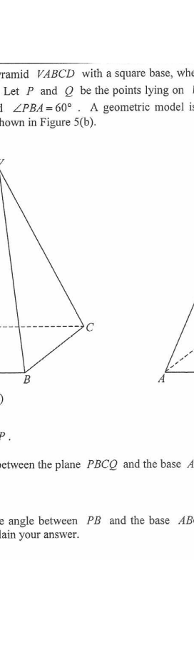

HKDSE 2012 · Paper 1 · Q18 — Right Pyramid with Square Base
Trigonometry in 3D · scroll the solution to highlight the geometry
Interactive Figure
3D 互動模型 — 拖動旋轉查看不同角度
Base edgesLateral edgesCut plane PBCQSegment PBPerpendiculars / anglesHidden edges (dashed)
Question & Solution
18. Figure 5(a) shows a right pyramid VABCD with a square base,
where $\angle VAB = 72^\circ$. The length of a side of the base is 20 cm.
Let $P$ and $Q$ be the points lying on $VA$ and $VD$ respectively such that
$PQ$ is parallel to $BC$ and $\angle PBA = 60^\circ$. A geometric model is
made by cutting off the pyramid VPBCQ from VABCD as shown in
Figure 5(b).
(a) Find the length of $AP$. [2 marks]
(b) Let $\alpha$ be the angle between the plane $PBCQ$ and the base $ABCD$.
(i) Find $\alpha$.
(ii) Let $\beta$ be the angle between $PB$ and the base $ABCD$.
Which one of $\alpha$ and $\beta$ is greater? Explain your answer. [6 marks]

Figure (original exam diagram)
STEP 1 · Set up triangle ABP
$P$ lies on $VA$ and $PQ \parallel BC \parallel AD$, so plane $PBCQ$ is parallel
to the base directions. In $\triangle ABP$ the three angles are known:
$$\angle VAB = 72^\circ \;\Rightarrow\; \angle PAB = 72^\circ,\qquad \angle PBA = 60^\circ$$
$$\angle APB = 180^\circ - 60^\circ - 72^\circ = 48^\circ$$
Also $AB = 20$ cm (side of the square base).
Key idea: $P$ is on $VA$, so $\angle PAB$ is exactly the given $\angle VAB$.
STEP 2 · (a) Sine formula in △ABP
$$\frac{AP}{\sin\angle PBA} = \frac{AB}{\sin\angle APB}$$
$$\frac{AP}{\sin 60^\circ} = \frac{20}{\sin 48^\circ}$$
$$AP = \frac{20\sin 60^\circ}{\sin 48^\circ} \approx 23.30704256$$
Sine Formula\(\dfrac{a}{\sin A}=\dfrac{b}{\sin B}=\dfrac{c}{\sin C}\)Use two known angles and one known side to find another side of the same triangle.
(a) $AP \approx 23.3$ cm (1 d.p.)
STEP 3 · (b)(i) Drop perpendicular PS ⊥ AD
Let $S$ be the foot of the perpendicular from $P$ to $AD$ (the midpoint of the
segment on the base through $P$). Then
$$PS = AP\sin\angle PAD \approx 23.30704256 \times \sin 72^\circ \approx 22.1663147\ \text{cm}$$
$$AS = AP\cos\angle PAD \approx 23.30704256 \times \cos 72^\circ \approx 7.202272239\ \text{cm}$$
$PS$ is the height of $P$ above the base; $S$ is the projection of $P$.
Resolution of a Slant Edge\(\text{height}=AP\sin\angle PAD,\qquad \text{horizontal shift}=AP\cos\angle PAD\)Resolve \(AP\) into components perpendicular and parallel to the base.
STEP 4 · Find PB and PT ⊥ BC
By the sine formula in $\triangle ABP$:
$$\frac{PB}{\sin 72^\circ} = \frac{20}{\sin 48^\circ}
\;\Rightarrow\; PB \approx 25.59545552\ \text{cm}$$
Let $T$ be the foot of the perpendicular from $P$ to $BC$. Then $BT = AS$ and
$AB = 20$ cm:
$$PT^2 = PB^2 - BT^2 \approx 25.59545552^2 - 7.202272239^2
\;\Rightarrow\; PT \approx 24.5612419\ \text{cm}$$
STEP 5 · (b)(i) Angle α = ∠PTS
The angle between plane $PBCQ$ and the base is the angle between the
perpendiculars $PT$ (in plane $PBCQ$) and $ST$ (in base), i.e.
$\alpha = \angle PTS$, where $ST = AB = 20$ cm. By the cosine formula:
$$\cos\alpha = \frac{PT^2 + ST^2 - PS^2}{2(PT)(ST)}$$
$$\cos\alpha = \frac{24.5612419^2 + 20^2 - 22.1663147^2}{2(24.5612419)(20)}
\approx \frac{2439.3}{982.45} \approx 0.5213$$
$$\alpha \approx 58.59703733^\circ$$
Cosine Formula\(\cos C=\dfrac{a^{2}+b^{2}-c^{2}}{2ab}\)The angle between two planes is the angle between two perpendiculars, one in each plane; apply the cosine formula in that triangle.
(b)(i) $\alpha \approx 58.6^\circ$ (3 s.f.)
STEP 6 · (b)(ii) Compare α and β
Let $X$ be the projection of $P$ on the base $ABCD$. Then
$\beta = \angle PBX$ and $\sin\beta = \dfrac{PX}{PB} = \dfrac{PS}{PB}$,
while $\sin\alpha = \dfrac{PX}{PT} = \dfrac{PS}{PT}$.
Since $PT < PB$ (the perpendicular from $P$ to line $BC$ is shorter than
the slant line $PB$ to $B$), we get
$$\frac{PS}{PT} > \frac{PS}{PB} \;\Rightarrow\; \sin\alpha > \sin\beta$$
Both $\alpha$ and $\beta$ are acute angles, so sine is increasing:
Angle between a Line and a Plane\(\sin\theta=\dfrac{\text{perpendicular height}}{\text{slant length}}\)Comparing \(\sin\alpha=\dfrac{PS}{PT}\) with \(\sin\beta=\dfrac{PS}{PB}\) and \(PT\beta\).
(b)(ii) $\alpha > \beta$ (since $\sin\alpha > \sin\beta$, both acute)
PRACTICESimilar question — try it yourself
Question. \(VABCD\) is a right pyramid with a square base \(ABCD\) of side \(20\text{ cm}\). The apex \(V\) is vertically above the centre \(E\) of the base and \(VE=10\sqrt{2}\text{ cm}\). (a) Find \(VA\). (b) Find the angle between \(VA\) and the base. (c) Find the angle between the plane \(VBC\) and the base.
Show the worked solution
Step 1. \(EA\) is half a diagonal: \(EA=\sqrt{10^{2}+10^{2}}=10\sqrt2\text{ cm}\).
Step 2. (a) \(VA^{2}=VE^{2}+EA^{2}=200+200=400\), so \(VA=20\text{ cm}\).
Step 3. (b) The projection of \(VA\) on the base is \(EA\), so \(\tan\theta=\dfrac{VE}{EA}=\dfrac{10\sqrt2}{10\sqrt2}=1\), giving \(\theta=45^{\circ}\).
Step 4. (c) Let \(M\) be the mid-point of \(BC\). Then \(EM\perp BC\), \(EM=10\), and \(VM\perp BC\) by symmetry, so the required angle is \(\angle VME\).
Step 5. \(\tan\angle VME=\dfrac{VE}{EM}=\dfrac{10\sqrt2}{10}=\sqrt2\), so the angle is about \(54.7^{\circ}\).
Answer: (a) \(VA=20\) cm. (b) \(45^{\circ}\). (c) \(\tan\alpha=\sqrt2\), \(\alpha\approx54.7^{\circ}\).
Numerically $\alpha \approx 58.6^\circ$ while
$\beta = \angle PBX$ satisfies $\sin\beta = PS/PB$, giving $\beta \approx 60.0^\circ$… note
the comparison relies on $PT < PB$, so $\alpha > \beta$.